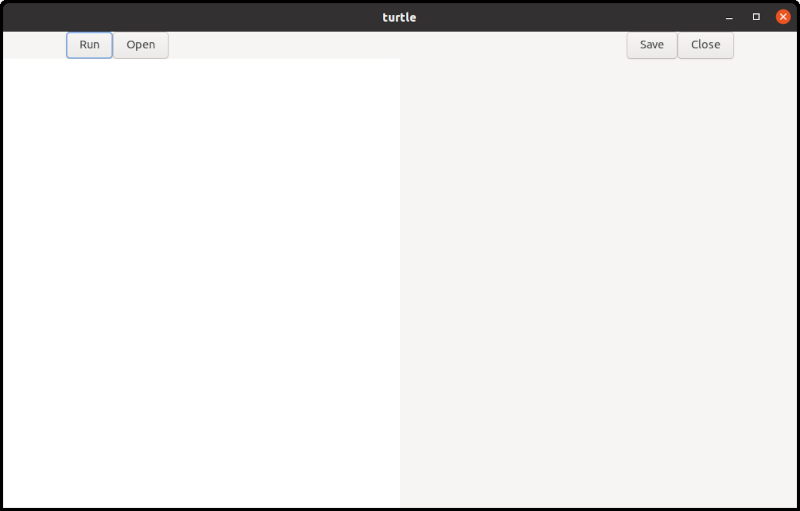
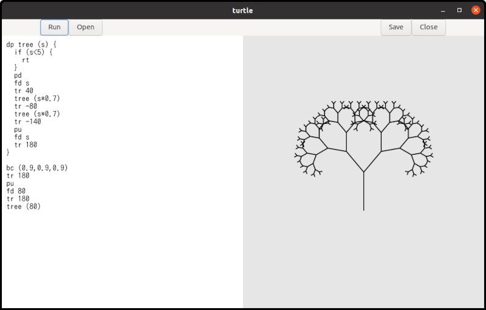
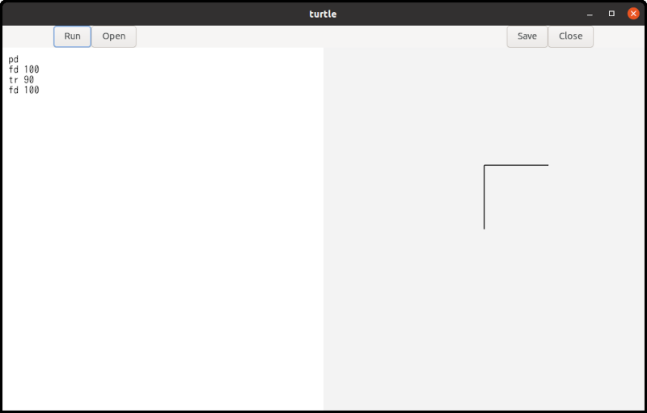
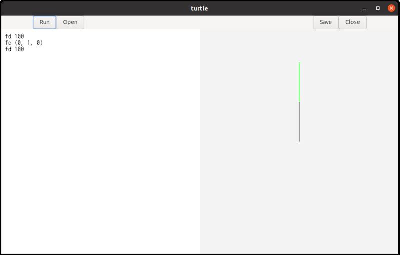
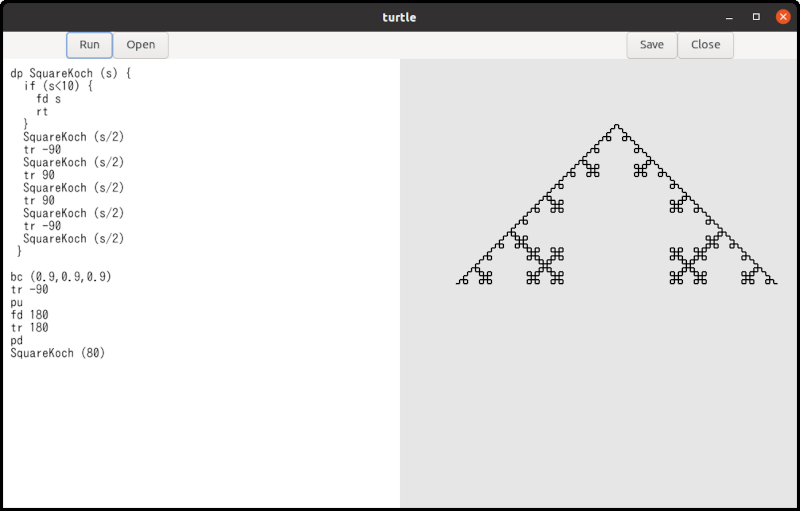

Turtle Manual
Turtle is a simple interpreter for turtle graphics.
Requirements and Installation
Turtle is written in C language. You need:
- Linux. Turtle is tested on ubuntu 26.04 LTS
- gcc, meson and ninja
- gtk4. Turtle is tested on GTK 4.22.4
It is easy to compile Turtle’s source files and install it.
For a user-area installation, put an option
--prefix=$HOME/.local to your meson command line.
Then, it will be installed under $HOME/.local/bin.
The instruction is:
$ meson setup --prefix=$HOME/.local _build
$ ninja -C _build
$ ninja -C _build installFor a system-wide installation (under
/usr/local/bin), just run it without any options.
You’ll need root privileges for the install step, so don’t
forget to add ‘sudo’ to the last command.
$ meson setup _build
$ ninja -C _build
$ sudo ninja -C _build installType the following command, and the following window appears.
$ turtle
The left half is a text editor and the right half is a surface. Surface is like a canvas to draw shapes.
Write Turtle language in the text editor and click the
run button. Then, the program will be executed and
it draws shapes on the surface.

If you uncomment the following line in turtle.y,
the codes for debugging will also be compiled. Turtle shows the
status to the standard output, but the speed is quite slow. It
is not recommended except you are developing the program.
/* # define debug 1 */Example
Imagine a turtle. The turtle has a pen and initially it is at the center of the screen, facing to the north (to the north means up on the screen). You can let the turtle down the pen or up the pen. You can order the turtle to move forward.
pd
fd 100- pd: Pen Down. The turtle put the pen down so that the turtle will draw a line if it moves.
- fd 100: ForwarD 100. The turtle goes forward 100 pixels.
If you click the run button, a line segment
appears on the screen. One of the endpoints of the line segment
is at the center of the surface and the other is 100 pixels
above the center. The point at the center is the start position
of the turtle and the other endpoint is its final position.
If the turtle picks the pen up, no line segment appears.
pu
fd 100The command pu means “Pen Up”.
The turtle can change its direction.
pd
fd 100
tr 90
fd 100The command tr is “Turn Right”. The argument is
an angle in degrees. Therefore, tr 90 means “Turn
right by 90 degrees”. If you click the run button,
two line segments appear. One is vertical and the other is
horizontal.

You can use tl (Turn Left) to change the
turtle’s direction as well.
Background and Foreground Colors
Colors are specified using RGB and are represented by an (r, g, b) value. Each component is a real number between 0 and 1.
- Red is (1.0, 0.0, 0.0). You can also write (1, 0, 0).
- Green is (0.0, 1.0, 0.0)
- Blue is (0.0, 0.0, 1.0)
- Black is (0.0, 0.0, 0.0)
- White is (1.0, 1.0, 1.0)
You can create a variety of colors by changing the values of the three components.
There are two commands to change colors.
- bc: Background Color.
bc (1,0,0)changes the background color to red. This command clears the surface and changes its background color. Any shapes on the surface disappear. - fc: Foreground Color.
fc (0,1,0)changes the foreground color to green. This command changes the pen color. Existing shapes on the surface are not affected. After this command, the turtle draws lines in the new color.

Other Commands
- pw: Pen Width. This is the same as pen size or line width.
For example, if the current line width is 3,
pw 5makes newly drawn lines thicker, whilepw 1makes them thinner. - rs: ReSet. The turtle moves back to the initial position and direction. In addition, The command initialize the pen, line width (pen size), and foreground color. The pen is down, the line width is 2 and the foreground color is black.
An instruction such as fd 100or pd
is called a statement. Statements are executed in order, from
the beginning to the end of the program.
Comments and Spaces
Text following a # (hash mark) to the next
\n (new line) is treated as a comment. It includes
the beginning hash mark but doesn’t include the new line. If a
comment appears on the last line of a file, the trailing new
line can be omitted. The program ignores all comments.
# draw a triangle<NEW LINE>
fd 100 # forward 100 pixels<NEW LINE>
tr 120 # turn right by 120 degrees<NEW LINE>
fd 100<NEW LINE>
tr 120<NEW LINE>
fd 100 # Now a triangle appears.<EOF>Here, <NEW LINE> and
<EOF> represent a newline character and the
end of te file respectively. The comments on lines 1, 2, 3 and 6
are all syntactically correct.
Whitespace characters (spaces, tabs and newlines) are ignored and serve only as delimiters between commands and values. When calculating column numbers, each tab is treated as eight spaces.
Variables and Expressions
Variable names begin with a letter, followed by any
comnibnation of letters and digits. Keywords like
fd or tr can’t be used as variable
names. Distance and angle5 are
variables, but 1step is not, because it starts with
a number instead of a letter.
Variable names are case-sensitive.
All variables store real numbers and function identically to
the double type in C language. Integers are
automatically cast to real numbers, meaning 1 and 1.0 represent
the same value.
When writing numeric numbers, they must begin with a digit
rather than a sign (+ or -).
100,20.34and0.01are valid numbers+100is not a valid number and will cause a syntax error. You should simply use100instead.-100is technically not a single number. However, turtle recognizes the-as a unary minus operaor and applies it to the number100, so the calculated result is still-100.100 + -20is a valid expression and will be recognized as100 + (- 20)since unary minus has higher precedence than addition. However, using parentheses — written as100 + (-20)— is recommended to make your code easier to read.
distance = 100
fd distanceIn the first line, the value 100 is assigned to
the variable distance. An assignment is a type of
statement. While most statements must begin with a command like
fd, assignments are the only exception to this
rule.
The example above draws a line segment 100 pixels long.
You can use variables in expressions. There are 8 types of operations available.
- Addition:
x + y - Subtraction:
x - y - Multiplication:
x * y - Division:
x / y - Unary minus:
- x - Logical equality:
x == y - Greater than:
x > y - Less than:
x < y
The last three operators are primarily used as conditions in
if statements.
A variable is registered in the symbol table the first time it is assigned a value. Evaluating a variable before it has been registered is not allowed and will cause an error.
The if Statement
The Turtle language has a very simple if
statement.
if (x > 50) {
fd x
}There is no else clause.
The loop Statement
The Turtle language has a very simple loop construct:
rp (RePeat) statement.
rp (4) {
fd 100
tr 90
}The code repeats the statements enclosed the curly braces four times.
Procedures
Procedures are similar to functions in the C language. The main difference is that procedures do not return a value.
dp triangle (side) {
fd side
tr 120
fd side
tr 120
fd side
tr 120
}
triangle (100)The dp (Define Procedure) keyword is followed by
a procedure name, a list of parameters, and the procedure’s
body. Procedure names must begin with a letter, followed by
letters or digits. Parameters are provided as a comma-separated
list of variables inside parentheses.
For example:
dp abc (a) { ... ... }
dp abc (a, b) { ... ... }
dp abc (a, b, c) { ... ... }The body is a sequence of statements. These statements are not executed when the procedure is defined. Instead, they are executed later when the procedure is called.
Procedures are called by their names followed by arguments.
dp proc (a, b, c) { ... ... }
proc (100, 0, -20*3)The number of arguments must match the number of parameters. An argument can be any valid expression. When calling a procedure, you must include parentheses after the procedure name,even if there are no arguments.
Procedure names and variable names do not conflict.
dp a () {fd a}
a=100
a ()This is a valid program.
- 1: Defines a procedure name
a. A variable nameais used in its body. - 2: Assigns the value
100to the variablea. - 3: Calls the Procedure
a.
However, using the same name for a procedure and a variable causes confusion. You should avoid doing this.
Recursive Calls
Procedures can be called recursively.
dp repeat (n) {
n = n - 1
if (n < 0) {
rt
}
fd 100
tr 90
repeat (n)
}
repeat (4)In this example, repeat is called from within
its own body. A procedure calling itself is known as a recursive
call.
New parameters are created and set each time the procedure is
called. Therefore, the parameter n is 4 during the
first call, but it is 3 during the second call. Each time the
procedure is called, n decreases by one. Finally,
when n becomes less than zero, the procedure
returns.
Notice that the condition uses < 0 rather
than == 0. Because all numbers in the Turtle
language are floating-point values (double), they
are subject to tiny precision errors (rounding errors) during
calculations. Checking for exact equality with ==
might fail due to these microscopic errors, which would cause an
infinite loop. Using < ensures the recursion
terminates safely.
The program above draws a square. This demonstrates that we can program loops using recursive calls.
Fractal Curves
A fractal is a special pattern that looks exactly the same even as you zoom in. To draw one, you start with a basic shape and apply a simple rule repeatedly. With every step, you add a smaller version of the shape, scaling it down at a constant rate (like exactly half the size of the previous one).
This shape is called a fractal tree, or simply ‘tree’. The base pattern is a single line segment, which represents the first stage. In the second stage, two shorter line segments are added to the endpoint of the original segment. Each new segment is 70% of the original length and is rotated by +30 or -30 degrees. The third stage applies this same rule, adding two even shorter segments to the ends of the second-stage segments. This process is then repeated several times to generate the complete tree.
This repetition is implemented using recursive calls. Two additional examples are shown below: the Koch curve and the Square Koch curve.


The src/turtle/example folder contains some
example Turtle code including the shapes above.
Tokens and Punctuation
Below is a list of the available tokens.
Keywords:
pu: Pen uppd: Pen downpw: Pen width (line width)fd: Forwardtr: Turn righttl: Turn leftbc: Background colorfc: Foreground colorif: If statementrt: Returnrs: Resetrp: Repeatdp: Define procedure
Identifiers and Numbers:
- Identifier: Used for the names of variables, parameters and
procedures. It is denoted by the regular expression
[a-zA-Z][a-zA-Z0-9]*. - Number: Defined by the expression
(0|[1-9][0-9]*)(\.[0-9]+)?. Numbers do not include a+or-sign to avoind syntactic ambiguity. However, a negative value such as-10is evaluated as a unary minus operator followed by a number.
Assignment:
=: Assignment
Expression Symbols:
==: Equality>: Greater than<: Less than+: Addition-: Subtraction or Unary Minus*: Multiplication/: Division(: Left parenthesis (Opening parenthesis)): Right parenthesis (Closing parenthesis)
Delimiters:
(: Left parenthesis (used to open parameter and argument lists, as well as conditions or values for statements such asif,rp,bc, andfc)): Right parenthesis (used to close parameter and argument lists, as well as conditions or values for statements such asif,rp,bc, andfc){: Left curly brace (used to open a block of statements, such as a procedure body)}: Right curly brace (used to close a block of statements),: Comma (used to separate parameters or arguments)
Comments and Whitespace:
- Comment: A comment begins with a
#symbol and continues until the next newline character. If a comment is placed at the very end of a file, the trailing newline may be omitted. - Space: The standard space character.
- Horizontal tab: Recognized as eight spaces.
- Newline: Marks the end of a line.
Comments and whitespace are used to explicitly separate tokens. They do not have any syntactic meaning and are ignored by the parser.
Grammar
program:
statement
| program statement
;
statement:
primary_procedure
| procedure_definition
;
primary_procedure:
pu
| pd
| pw expression
| fd expression
| tr expression
| tl expression
| bc '(' expression ',' expression ',' expression ')'
| fc '(' expression ',' expression ',' expression ')'
| ID '=' expression /* ID is an identifier which is a name of variable */
| if '(' expression ')' '{' primary_procedure_list '}'
| rt
| rs
| rp '(' expression ')' '{' primary_procedure_list '}'
| ID '(' ')' /* ID is an identifier which is a name of procedure */
| ID '(' argument_list ')' /* the same as above */
;
procedure_definition:
dp ID '(' ')' '{' primary_procedure_list '}'
| dp ID '(' parameter_list ')' '{' primary_procedure_list '}'
;
parameter_list:
ID
| parameter_list ',' ID
;
argument_list:
expression
| argument_list ',' expression
;
primary_procedure_list:
primary_procedure
| primary_procedure_list primary_procedure
;
expression:
expression '==' expression
| expression '>' expression
| expression '<' expression
| expression '+' expression
| expression '-' expression
| expression '*' expression
| expression '/' expression
| '-' expression %prec UMINUS
| '(' expression ')'
| ID
| NUM /* NUM is a number */
;